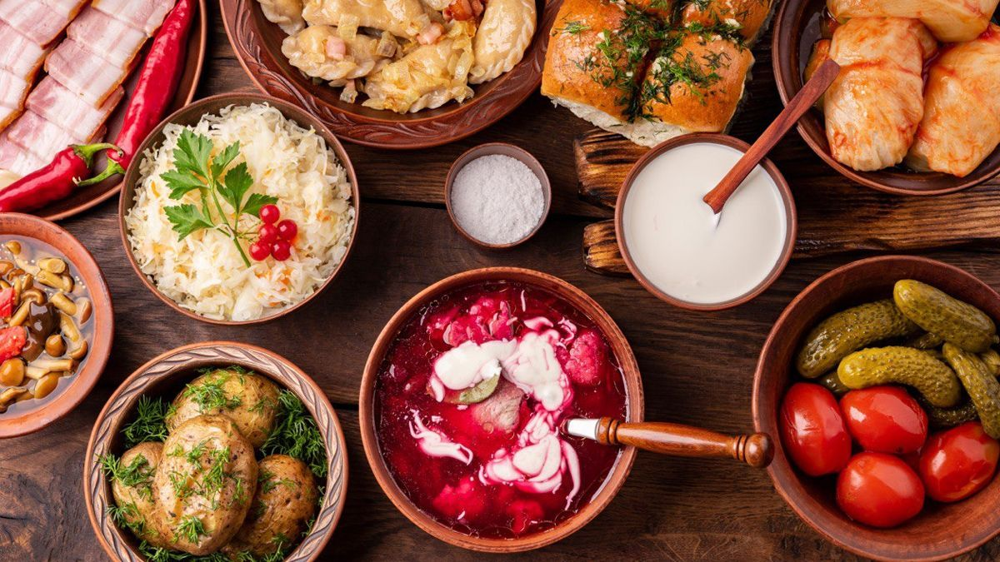

Ласощі з України
Ласощі з України - це багатство смаку і культури. Ви знайдете різноманітні страви з різних регіонів України, які відзначаються своїми унікальними рецептами та смаками.
ТОП українських страв
- Борщ: Ця страва – символ української кухні, перша і єдина, яка уже на розгляді в ЮНЕСКО, щоб бути включеною в список Нематеріальної культурної спадщини України.
- Бограч
- Окрошка
- Вареники
- Куліш
- Банош
- Голубці
- Деруни